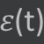
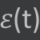

All’istante t=0s l’angolo tra la normale della spira e il campo magnetico costante B è θ=0°.
La spira presenta un'area di dimensioni A e viene fatta roteare con una velocità angolare costante ω intorno al suo asse.
La velocità angolare ω è per definizione il rapporto tra lo spostamento angolare (Δ𝜃) e la variazione
di tempo Δt.
Ora, sapendo che la variazione dell'angolo è data dall'angolo finale 𝜃(t) meno l'angolo iniziale 𝜃0 che è zero (per tesi) e sapendo
anche che lo stesso vale per il tempo, ovvero Δt è il tempo finale t meno il tempo iniziale, 0 (sempre per tesi), si ha che la velocità angolare è ω = 𝜃(t) / t
A questo punto con un paio di calcoli si ottiene il risultato desiderato:

Il flusso di campo magnetico Φ(B) è per definizione la misura della quantità di campo magnetico B che attraversa una cera
area A. Nel caso di una spira immobile per misurare questo valore basta fare il prodotto scalare tra il vettore del campo magnetico e il
vettore dell'area, moltiplicando quindi i moduli per il coseno dell'angolo compreso, 𝜃.
Dato però che la spira è in movimento questo
angolo varia nl tempo e, utilizzando la formula dimostrata prima, si arriva al risultato desiderato:
Secondo la legge di Faraday-Neumann la forza elettromagnetica indotta 𝜀(t)è proporzionale al numero di avvolgimenti N intorno alla spira e alla rapidità di variazione del flusso del campo magnetico attraverso la spira nel tempo. si ha di conseguenza che:
Il segno negativo nell'equazione ha il compito di indicare che la fem indotta tende ad opporsi al flusso
del campo magnetico.
Quando in queste ultime righe mi sono riferito alla fem indotta in realtà mi stavo riferendo al valore
medio in un intervallo di tempo. Per ottenere il valore istantaneo è necessario cercare il valore in un intervallo di tempo infinitesimo
e per fare ciò si usa la derivata, il limite del rapporto incrimentale di una funzione in un punto al tendere dell'incremento a zero.
Bisogna quindi derivare il flusso in funzione del tempo utilizzando il metodo delle derivate composte:
Per rappresentare la funzione sul grafico ho utilizzato dei valori scelti casualmente per l'area (2m), per il campo magnetico (2 T), per il numero di spire (1) e per la velocità angolare (1.5 rad/s) dato che il tempo è l'unica variabile dell'equazione.
Come si può osservare nel grafico la funzione periodicamente cambia segno, più precisamente ogni t=ω/𜋠(dato che
la funzione seno cambia di segno ogni θ=𜋠e quindi ogni ωt=ğœ‹), e per questo motivo viene chiamata "alternata".
La funzione inoltre
avrà dei massimi e dei minimi quando la funzione seno sarà a 1 (per i massimi) o a -1 (per i minimi) e i valori massimi e minimi sono
rispettivamente NBAω e -NBAω